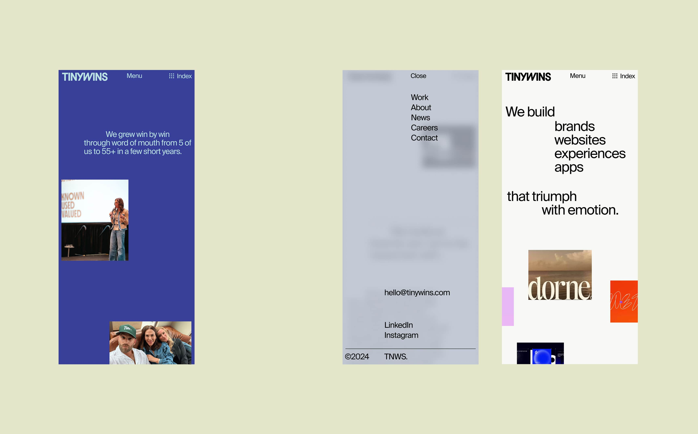

Tinywins
Revamping the digital agency's brand through website redesign.
/ 2024
Brand Design, Web Design, Motion

Client
Tinywins
Co-Founder
Matty Ayers
Chief Executive Officer
Alwyn De Gallegos
Executive Creative Director
Justin Rands
Brand & Experience Design
Jae Yoon Studio